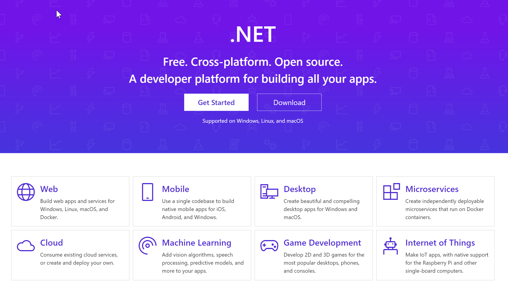
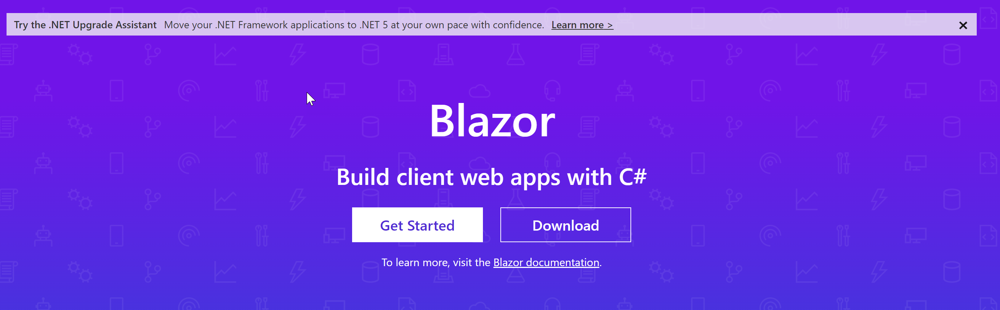
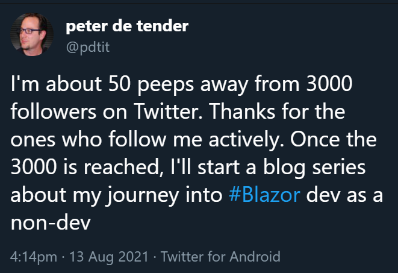
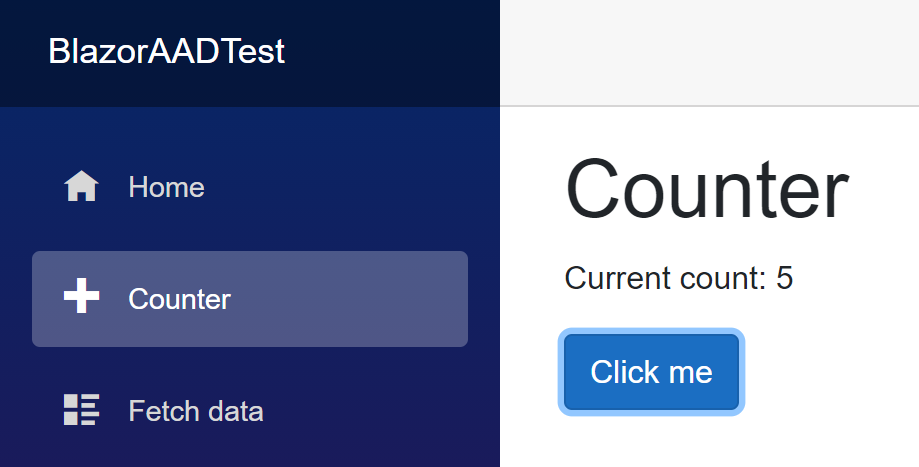

Hello readers,
The ones who know me already, know I have used traditional on-premises datacenter infrastructure for the first 15 years of my career, before I jumped onto Azure public cloud. Yes, I was an infra guy. And sometimes I still think I am, although I’m more and more shifting to containers and devops over the last 3 years.
With the 25 years of IT experience, there was always 1 skillset missing… coding, or learning a development language in better words.
After talking to several DevOps folks within Microsoft and elsewhere, it became clear I had to learn some language, if I wanted to take this DevOps thing serious (trust me, it is not required, but definitely recommended, now I look back how I talk about DevOps with some development skills acquired)
So many languages to choose from
Once I set my mind to it, the next question was, what language am I going to learn myself?
- Python seemed the easiest, is quite popular, but didn’t appeal to me for still an unknown reason.
- Java seemed the most professional, but also the most complex.
- Go looked promising, but I never really seen it in action.
- C# and DotNet was like the natural go to, as we are using a lot of DotNet examples during different Azure workshops I’m delivering every week
DotNet as my logical example
Within the DotNet (https://dotnet.microsoft.com/learn/dotnet/what-is-dotnet) family, you still have a few different options:
- DotNet Core, which gives you cross-platform .NET implementation for browsers, apps on any platform OS
- DotNet Framework, supporting full Windows applications, and websites
- Xamarin/Mono, which is a DotNet implementation for mobile apps

How I ended up with Blazor
If I was going to develop “something”, it would probably be a console app (easy to demo) or a web application (perfect for my Azure training deliveries and I can run it in Azure and Containers -> bonus) From there, my mind was set to start developing Web Applications, and more specifically by using Blazor (https://dotnet.microsoft.com/apps/aspnet/web-apps/blazor).

Over Christmas holidays, I started building my library of learning material, which consisted of Microsoft Docs, Youtube videos and other community sessions. (I’ll cover some of these in another article later)
I also started working on building an app from scratch, which would make my life as an Azure trainer easier, as well as for my colleagues.
I managed to build a “useable” web application over the course of a few months, spending about 10 hours a week; As I approached 3000 followers on Twitter recently, I decided to come up with a series of posts on Blazor, explaining what I learned, where I struggled (and still am), to help others who are like myself, starting with no dev experience whatsoever.

What is Blazor
Blazor comes in 2 different flavors:
- Blazor Server
- Blazor Web Assembly
Blazor Server is closest to a traditional ASP.Net application, running on a web server, which can be Windows or Linux, as well as a containerized platform. Updates in the web app layout, the actual events (clicking buttons, routing pages,…) and JavaScript handling (yes, I’ll detail that in another article) are all transferred between client (your browser) and the server (the backend) using SignalR. Think of this as a messaging handler between client and server.
Blazor WebAssembly is a 2nd flavor, which doesn’t require a server back-end, but rather runs all DotNet code directly in the browser. This is not a DotNet something, but rather a capability of WebAssembly (WASM in short), an open standard which aims to allow running powerful applications natively in a browser. If any Server-side events are needed, you can integrate it with Blazor Server or other API-based back-ends.
Blazor as terminology is coming from a combination of “Browser” and “Razor” (https://docs.microsoft.com/en-us/aspnet/core/razor-pages/?view=aspnetcore-5.0&tabs=visual-studio), if you were wondering.
The way I see it (as non-developer :) ), is that those Razor Pages are like a simplified programming language in itself, combining HTML layout controls and actual C# coding together. By routing Razor Pages across different Razor-files (cshtml as extension), you build up your application. They are also recognized by the “@page” directive at the beginning of each file.
Below is a sample Razor Page, coming from the default Blazor Server or Blazor Web Assembly template in Visual Studio - which I will describe in a later blog post how to deploy it and what it does).
|
|
As you can see, the @page directive points to the “name” of this web page, being the “counter page”. Thinks of this as browsing to https://yourwebsiteURL/counter
next, there is a bit of HTML code for the actual layout of the page, and last, it contains some C# code with the actual intelligence of the counter button.
The way this page looks in the browser is like this:

What am I going to do from here?
As promised, my idea is to share as much of what I learned from Blazor in the last few months, and taking you through a process to start learning to build your own Blazor applications. The following will be covered over a series of articles in the next coming weeks:
- Deploying your first Blazor Server App
- Customizing the basic layout
- Updating Navigation Menu items
- Creating API Controllers to read data
- Integrating Entity Framework to read data from SQL DB
- Building forms for CRUD (create, read, update, delete) operations
- Integrating with external API Services to read data
- Publishing Blazor Server to Azure App Services
I hope you will learn from this, and enjoy the journey as much as I did, and still do. While I am far from calling myself a developer, it feels rather rewarding to see how code can be turned into a useful application!
Btw, if you are interested in developing with Blazor, you can hire a Blazor developer from Toptal, a leading platform for connecting top-tier developers with clients.
Talk to you soon,

Cheers, Peter